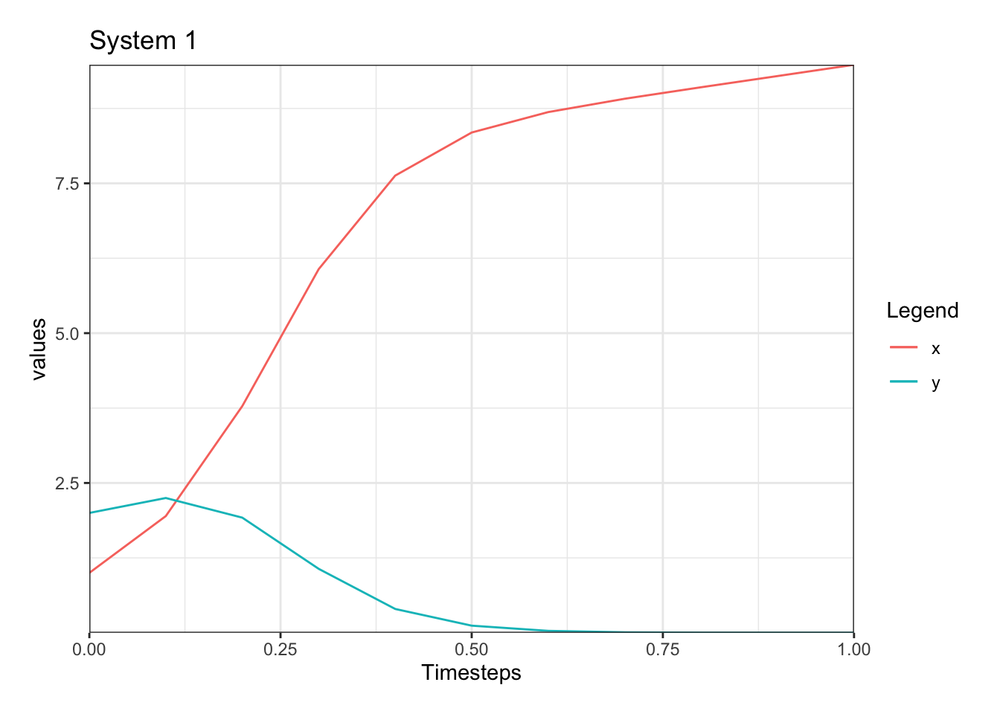

Using Differential Equations to Model Disease Dynamics
In this website, we will be exploring the applications of differential equations to disease modeling. Alongside a basic knowledge of calculus, this website should be helpful in teaching how to create and evaluate an original SIR model. This website starts with basic information of what differential equations are, and it moves to discuss the SIR model and its specific applications. Code and graphical representation are used heavily to visualize and interpret the data effectively and efficiently.
Differential Equations
Introduction
The type of model that we use to predict the progression of various diseases uses systems of differential equations. Differential equations are equations that involve a derivative, and systems are multiple differential equations comprising one larger model.
The basis of differential equations is that they show how a given function or functions change over time, but sometimes they can be rather difficult to solve. However, there is three main ways to solve differential equations: numerically, analytically, and quantitatively. In the rest of this research, we rely heavily on numerical methods, but quantitative and analytical methods can also be used.
Additionally, equilibrium analysis is an important concept within the modeling of diseases. In equilibrium analysis, we evalute the long term behavior of a system, often using graphical representations. We seek to find the equilibrium point of a system. The equilibrium point is the point when you start at it, you will never move from it.
The Numerical Method
The numerical method is great for solving very complex systems of differential equations if a computer is able to be used, otherwise, the process can be a bit tedious.
To udnerstand how the numerical method works, first look at euler’s method of aproximation. This method takes into account the basic ideas of calculcus. If given a system of differential equations \(\frac{dx}{dt}=f(t,y,x), \frac{dy}{dt} = g(t,y,x)\) and the intital value \(x(0)=a\) and \(y(0)=b\) we can use the form \(y_{k+1}=y_{k}+\delta tf(t,y,x), x_{k+1}=x_{k}+\delta tf(t_{k},y_{k},x_{k})\) where \(\delta t\) is the timesteps. In essense this method uses the changin rate at a point \(y_{k}\) and uses it to predict the value of \(y_{k+1}\).
Using this, an approximation can be made on the values of x and y at various timesteps. However, this method can be improved by taking very small timesteps and allowing a computer to calculate with more precision. In this case, an ordinary differential equations (ode) solver can be used. The following systems of differential equations will be used as an example.
\[\frac{dx}{dt}= \frac{1}{5}x + 3xy\\ \frac{dy}{dt} = 4y - 2xy\]
With the initial condition of \(x(0)=1\) and \(y(0) = 2\).
An ordinary differential equations (ode) solver can be used to compute the solutions to this system numerically with much greater accuracy.
First the system must be defined within the R programs model.system, and the initial conditions will be specified. The packages used are also called at the beginning of the code.
model.system <- function(time,state,parms){
with(as.list(c(state,parms)),{
dx = 1 / 5 * x + 3 * x * y
dy = 4 * y - 2 * x * y
return(list(c(dx, dy)))
}
)
}
initial.conditions <- c(x = 1, y = 2)Now, the simulation specific aspects of the code need to be added. This icludes the size of the timesteps, the amount of timesteps, and the function that is used to compute the solutions to the system.
dt <- 0.1
timesteps <- seq(0, 1, by = dt)
simulation <- as.data.frame(ode(y=initial.conditions, func = model.system,
parms=model.parameters, times=timesteps))By using small timesteps, the accuracy of the numerical aproximations greatly increases. Now, the data needs to be visualized. A graph can be used, or the data can be printed our in an array of data. For simplicity and ease of understanding, a data plot will be used to visualize the data.
plotS <- ggplot() +
geom_line(simulation,mapping=aes(x=time, y=x, color = 'x')) +
geom_line(simulation,mapping=aes(x=time, y=y, color = 'y')) +
labs(x="Timesteps", y="values", color='Legend') +
scale_x_continuous(expand=c(0,0)) +
scale_y_continuous(expand=c(0,0)) +
theme_bw() +
ggtitle("System 1")+
theme(plot.margin = margin(15,15,15,15))
plotS
From this tye of anaylsis, we can gain a lot of useful data. We can see that as time goes on, y approaches zero. This is useful information because a lot of times it is important to know the long term behaviro of a system.
Analytical Solutions
Another way of determining the solutions of systems of differential equation is by using different methods to solve the analytically. This method, if done correctly, is very accurate and can give an explicit function for \(y(t)\), but it is sometimes not possible or incredibly difficult to do. There are countless ways to analytically solve a system of differntial equations.
Qualitative Solutions
Qualitative solutions are found by examining the predicted behavior of the system. With qualitative analysis, phase lines and slope fields are used to predict the behavior of systems at or around equilibrium points. This method is vital in understanding the bigger picture of what is going on with the system as a whole, and allows visualization of the system without tedious calcuation.
A work by Brennan Holst
History
As a society, we take initiative to innovate in order to explain what was once explainable. This applied to the idea of predicting how diseases were going to spread. In order to properly manage disease it is vital to predict where and how the disease is going to progress. If it is known how the disease will spread, governments, hospitals, and citizens are able to properly allocate materials, treatments, and manpower, and are able to take initiative to prevent the spread of various disease. So, finding an accurate way to represent disease as at teh forefront of many early epidemiologists’ minds.
The first scientist to study the spread of diseases was John Graunt in the 17th century. In his methods, he would rely solely on the weekly death counts to measure how many people were dying. Graunt created documents called The Bills of Mortality where he presented data on the births and deaths and likely causes of death in local areas in London. He would often rely heavily on estimate and educated guesses to predict how the disease would spread next within the city of London. His methods and data were often considered to be flawed due to the inaccuracies in determining causes of death during his time. However, he set the groundwork for later, more accurate models.

After Graunt, epidemiologists began to take a more meticulous, mathematical approach to modeling diseases. Daniel Bernoulli was seen as the first person to take a mathematical approach to modeling diseases. Bernoulli was a trained physician who used mathematics to “defend the practice of inoculating against smallpox.” His data showed that by inoculating people against smallpox, their life expectancy could increase from around 26 years to around 29 years old.

Nowadays, mathematical models are used to model two different classes of diseases: communicable and progressive. Given recent headlines surrounding COVID-19, the use of various methods of modeling communicable diseases were used. A lot of them were based heavily in mathematics. One particular use, called the SIR model, is what we will explore further in the rest of this page. In real life, these models were used very heavily during the COVID pandemic. The predictions made at the beginning of the pandemic that estimated the death toll of the pandemic were calculated mathematically in some way or another. During this pandemic, math was used to predict the number of infected individuals, seriously ill individuals, symptomatic individuals, asymptomatic individuals, deaths, hospitalization,and infection rates in different age groups. Even now, as the COVID virus is much more manageable, these mathematical models are still being used to predict outcomes. For example, the next figure shows the project hospitalizations of COVID-19.
These types of data representations are incredibly inportant in the field of epidemiology. By using these matheamtical models, experts are able to assess and manage situations in an efficient way because they have enough information to do so. Once again, in the COVID-19 pandemic, experts were able to implement macking, social distancing, and vaccination requirement, because there models told them that the pandemic could get significantly worse without them. This is largely where the term “flattening the curve” came from. Since experts are able to see a predicted graph of the disease progression, they are able to implement stratgies to lessen the sudden impacts of disease and infection.
In terms of modeling progressive disease, mathematics is used to predict individual patient outcomes with diseases like ALS or Alzheimers. With a mathematical model, a system of equations can be derived to represtent the “extracellular plaques consisting of amyloid β-peptides and intracellular neurofibrillary tangles of hyperphosphorylated tau proteins” that contribute to the onset and progression of alzheimers disease. By using past trends of the disease, future outcomes can be predicted by using this model. This is extremely beneficial from a pateint care persepctive, because doctors, and families, are able to better understand howa nd when this disease will likely affect their patients or family members.
However, mathematical models for diseases are not always perfect representations of disease dynamics. These model find difficulty in the fact that they can be oversimplified representations or they are improper representations. The flaw in the oversimplified representation is that they are unable to account for all factors in nature that would be present in a normal disease, so they will never be able to model completely effectively. Additionally, in this case, the changing nature of disease makes it difficult to model without adjustment to the parameters. Because disease are constantly evolving, mathematical models can often only be used accurately for a short period of time. Also, if the model are improper representations, they do not remain true in real life. What this means is that the math representation either does not make sense in real life or does not accurately represent what is happening in real life. This can also be the result of an oversimplification, but it can also be due to improper assumptions and lack of knowledge in the model.
A work by Brennan Holst
About the Author
My name is Brennan Holst. I am a senior at West Salem High School in West Salem, Wisconsin. I am creating this website so that other people interested in research and in differential equations can learn more about what I did. I have been completing research alongside Dr. Robert Allen of the University of Wisconsin La Crosse on the application of differential equations and the SIR model on predicting the progression of disease relating to sociological factors This website is a display of that research. In the future, I will be attending Northwestern University in hopes of studying biomedical engineering and mathematics. I hope to continue researching diseases and other topics within the real of medicine.
A work by Brennan Holst